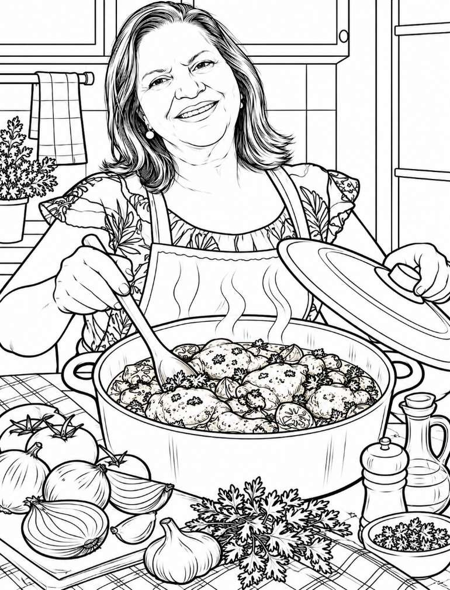

Frango Ensopado da Zelinda
A receita preferida da nora Márcia.
“Ah, o frango ensopado da minha sogra Zelinda… Nunca mais comi um frango igual ao dela! Até hoje, quando me lembro, parece que sinto aquele sabor maravilhoso. Era um tempero único, feito com tanto carinho que ficou guardado para sempre na minha memória e no meu coração!”

Ingredientes
1 frango inteiro, cortado em pedaços
Temperos básicos: Pouquíssimo alho, sal e pimenta-do-reino a gosto
Vinagre (para o tempero e para soltar o fundo da panela) 1 cebola picada
Tomates picadinhos sem pele Cheiro verde picadinho Batatas (opcional)
Água para o cozimento
Modo de preparo
- Tempere os pedaços de frango com o alho (sem exagerar), sal, pimenta-do-reino e um pouco de vinagre.
- Em uma panela, coloque óleo e deixe esquentar, acrescente o frango e refogue muito bem de todos os lados até dourar completamente.
- (O Segredo): Conforme o fundo da panela for criando aquela borra dourada, pingue vinagre aos poucos para soltar todo o fundo da panela (deglacear). Isso é o que dá ao molho uma cor marrom rica e um sabor inigualável que a Márcia adora.
- Adicione a cebola picada e o tomate picadinho, misturando bem para refogar.
- Acrescente água aos poucos para formar o ensopado e deixe cozinhar até o frango ficar bem macio e o molho encorpado. (Se desejar, adicione batatas cortadas durante o cozimento).
- Finalize com Cheiro verde picadinho.
Márcia, nora de Zelinda, guarda o frango ensopado entre os sabores que o tempo não apaga. O segredo está no cuidado de dourar bem os pedaços e aproveitar o fundo da panela com um pouco de vinagre. É uma técnica simples, mas decisiva: nada do sabor que ficou ali deve ser desperdiçado.